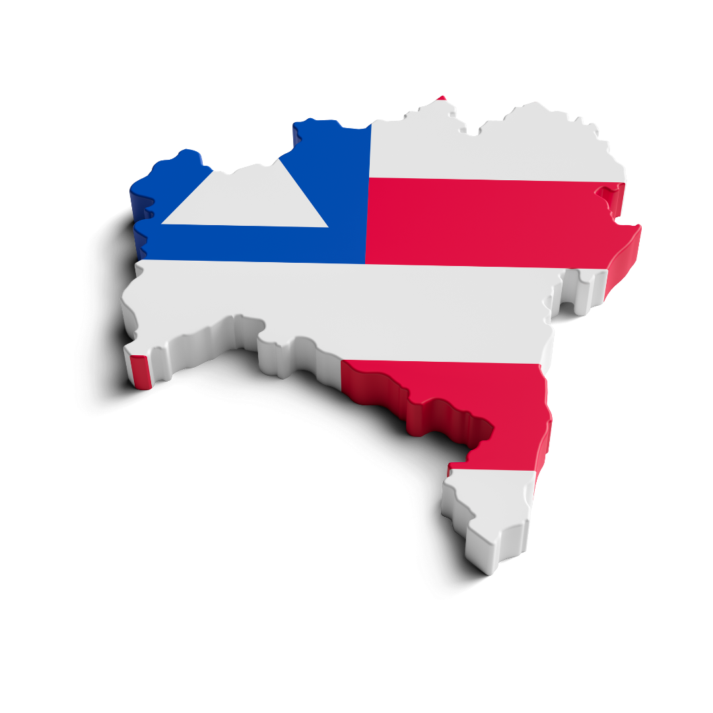

A Região Norte da Bahia, com destaque para o Vale do São Francisco, é marcada pela agricultura irrigada e pela produção em larga escala de frutas tropicais, especialmente manga e uva. A pecuária também é relevante, com foco em bovinos e caprinos. A mineração ocorre em algumas áreas, explorando principalmente minerais não metálicos.
Manga: O Vale do São Francisco é o maior produtor e exportador de manga do Brasil, com uma produção anual em torno de 300-350 mil toneladas, representando mais de 80% das exportações nacionais.
Uva: A região produz cerca de 600-700 mil toneladas de uva por ano, incluindo uvas de mesa (Itália, Thompson Seedless) e uvas para processamento (vinhos e sucos).
Leite: A produção leiteira na região tem crescido, contribuindo significativamente para o volume estadual.
Gesso: O polo gesseiro do Araripe, embora parcialmente em Pernambuco, tem forte influência na economia de municípios baianos vizinhos, com uma produção anual de milhões de toneladas.
A fruticultura irrigada, liderada por manga e uva, gera uma receita anual estimada em bilhões de reais, considerando tanto o mercado interno quanto as exportações. O polo gesseiro também movimenta uma parcela significativa da economia regional.
Juazeiro (polo da fruticultura irrigada), Petrolina (PE, forte influência econômica na região), Irecê (produção de grãos e hortaliças), Senhor do Bonfim (pecuária e mineração), Jacobina (mineração e agricultura).
A Região Leste da Bahia combina um forte polo industrial (Polo Petroquímico de Camaçari), uma agricultura diversificada (cacau, fruticultura) e um setor de turismo vibrante, especialmente em Salvador e no litoral. A proximidade com o mar impulsiona a pesca e atividades portuárias.
Derivados de petróleo: O Polo de Camaçari tem uma capacidade de refino significativa, com produção de gasolina, diesel, GLP, entre outros.
Plásticos: A produção de resinas termoplásticas é um dos pilares do polo industrial.
Cacau: Embora a produção tenha diminuído historicamente, o sul do leste ainda produz cacau de qualidade, com foco em nichos de mercado e chocolates finos.
Turismo: Salvador recebe milhões de turistas anualmente, impulsionando a economia local.
O Polo Petroquímico de Camaçari gera um faturamento anual na ordem de dezenas de bilhões de reais. O turismo também contribui significativamente para o PIB estadual. O agronegócio na região, embora diversificado, tem um peso menor em comparação com a indústria e o turismo.
Salvador (centro turístico, administrativo e de serviços), Camaçari (polo industrial), Feira de Santana (polo comercial e industrial), Ilhéus e Itabuna (histórico polo do cacau e turismo).
O Oeste da Bahia é uma fronteira agrícola em expansão, com destaque para a produção de grãos (soja, milho, algodão) em larga escala, impulsionada por tecnologia e grandes investimentos. A pecuária também é significativa, e a região apresenta um potencial crescente para o turismo ecológico.
Soja: A Bahia é um dos maiores produtores de soja do Nordeste, com a maior parte concentrada no Oeste, atingindo produções de milhões de toneladas por safra.
Algodão: O Oeste baiano é um dos principais polos produtores de algodão do Brasil, com alta produtividade e qualidade.
Milho: A produção de milho tem crescido na região, tanto para consumo interno quanto para exportação.
O agronegócio no Oeste da Bahia movimenta bilhões de reais anualmente, impulsionado pelas exportações de soja e algodão, além do mercado interno de grãos e carne.
Luís Eduardo Magalhães (um dos principais polos do agronegócio), Barreiras (importante centro comercial e de serviços), São Desidério (grande produtor agrícola), Formosa do Rio Preto (extensa área de produção).
O Sul da Bahia possui uma economia diversificada, com destaque para a produção de cacau (apesar da retração histórica), a pecuária, o cultivo de café, a fruticultura tropical e o crescente setor de celulose e papel impulsionado pelo eucalipto. O turismo também é um pilar importante, especialmente no litoral.
Cacau: A produção anual gira em torno de 120-150 mil toneladas, com foco na qualidade e em nichos de mercado.
Celulose: As empresas do setor produzem milhões de toneladas de celulose por ano, com grande parte destinada à exportação.
Turismo (Porto Seguro): Recebe um fluxo significativo de turistas domésticos e internacionais, com uma média de mais de 1 milhão de visitantes por ano.
A cadeia do cacau, incluindo chocolates finos, movimenta uma quantia considerável. O setor de celulose e papel gera bilhões em receita, impulsionado pelas exportações. O turismo é uma importante fonte de renda para diversas cidades da região.
Itabuna e Ilhéus (centros regionais e histórico do cacau), Porto Seguro (principal polo turístico), Teixeira de Freitas (importante centro econômico), Eunápolis (polo de serviços e comércio), Vitória da Conquista (planalto, pecuária e café).